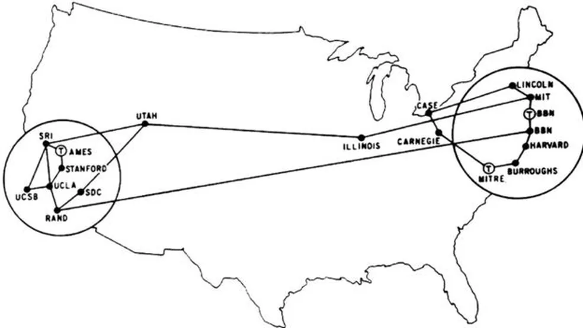
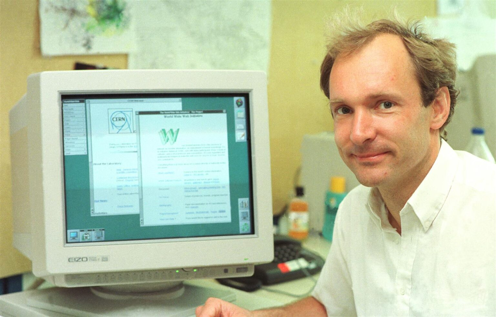

As redes de computadores surgiram na década de 1960 com o objetivo de permitir a comunicação e o compartilhamento
de informações entre diferentes computadores.
Antes disso, os computadores funcionavam de forma isolada, sem
conexão entre si.
O crescimento da necessidade de troca rápida de dados, principalmente em universidades, centros de pesquisa e
organizações militares, motivou o desenvolvimento das primeiras tecnologias de rede.
Essas redes iniciais utilizavam cabos e protocolos simples para transmitir informações entre máquinas.
A ARPANET foi criada em 1969 pela ARPA (Advanced Research Projects Agency), uma agência do Departamento de Defesa
dos Estados Unidos.
Ela é considerada a primeira rede de computadores da história e serviu como base para o surgimento da
internet.
O principal objetivo da ARPANET era permitir a comunicação entre universidades, centros de pesquisa e
instituições militares.
A primeira conexão aconteceu entre a Universidade da Califórnia (UCLA) e o Instituto de Pesquisa de
Stanford.
A ARPANET introduziu conceitos importantes, como o envio de dados em pacotes e a comunicação
descentralizada.
Essas tecnologias foram fundamentais para o desenvolvimento da internet moderna.

O TCP/IP é um conjunto de protocolos criado para permitir a comunicação entre computadores em diferentes =======

O TCP/IP é um conjunto de protocolos criado para permitir a comunicação entre computadores em diferentes
>>>>>>> 6f3d69ed11a1284f6d26041b427cc675dffb3e96
redes.
Seu desenvolvimento começou na década de 1970 e ele se tornou o padrão oficial da ARPANET em 1983.
O TCP (Transmission Control Protocol) é responsável por dividir os dados em pacotes e garantir que eles cheguem
corretamente ao destino.
O IP (Internet Protocol) é responsável por identificar os dispositivos na rede e encaminhar os pacotes até o
endereço correto.
A combinação desses protocolos permitiu a comunicação eficiente entre computadores no mundo todo.
<<<<<<< HEAD
Até hoje, o TCP/IP é a base do funcionamento da internet moderna.
O DNS (Domain Name System) foi criado para facilitar o acesso aos sites na internet.
Antes do DNS, era necessário memorizar o endereço IP dos computadores para acessar páginas e serviços
online.
O DNS funciona como uma “lista telefônica” da internet, convertendo nomes de domínio em endereços IP.
Por exemplo, ao digitar um endereço como “google.com”, o DNS localiza o endereço IP correspondente do
servidor.
Esse sistema tornou a navegação muito mais simples e prática para os usuários.
O DNS continua sendo uma das principais tecnologias responsáveis pelo funcionamento da internet moderna.
A World Wide Web (WWW) foi criada em 1989 pelo cientista britânico Tim Berners-Lee.
=======
A World Wide Web (WWW) foi criada em 1989 pelo cientista britânico Tim Berners-Lee.
>>>>>>> 6f3d69ed11a1284f6d26041b427cc675dffb3e96
O objetivo da Web era facilitar o compartilhamento de informações entre pesquisadores por meio da internet.
A criação da Web permitiu o acesso a documentos conectados por links, chamados de hiperlinks.
Com isso, os usuários passaram a navegar entre páginas de forma rápida e organizada.
A World Wide Web utiliza tecnologias como HTML, HTTP e navegadores para funcionar.
Seu surgimento transformou a internet em uma ferramenta acessível e utilizada no mundo inteiro.
Tim Berners-Lee é um cientista da computação britânico conhecido por criar a World Wide Web.
Em 1989, enquanto trabalhava no CERN, ele desenvolveu a ideia de um sistema que permitisse compartilhar
documentos pela internet.
Além da Web, Tim Berners-Lee também participou da criação do HTML, do HTTP e do primeiro navegador web.
Seu trabalho tornou a internet mais acessível e fácil de utilizar por pessoas do mundo todo.
Tim Berners-Lee é considerado uma das figuras mais importantes da história da tecnologia e da internet.
Até hoje, ele atua em projetos relacionados à inovação, privacidade e liberdade na Web.

"O poder da Web está na sua universalidade. O acesso por todas as pessoas, independentemente de suas
deficiências, é um aspecto essencial."
-Tim Berners-Lee.

"O poder da Web está na sua universalidade. O acesso por todas as pessoas, independentemente de suas deficiências, é um aspecto essencial."
-Tim Berners-Lee.
O HTML (HyperText Markup Language) é a linguagem de marcação utilizada para criar páginas da Web.
Ele foi desenvolvido por Tim Berners-Lee no início da década de 1990 junto com a criação da World Wide Web.
O HTML utiliza tags para organizar e estruturar conteúdos como textos, imagens, links e tabelas.
Com o HTML, os navegadores conseguem interpretar e exibir as páginas para os usuários.
Ao longo dos anos, a linguagem evoluiu e ganhou novos recursos para criação de sites modernos e interativos.
Atualmente, o HTML é uma das principais tecnologias utilizadas no desenvolvimento web.
Primeira página em HTML da história
O HTTP (HyperText Transfer Protocol) é o protocolo responsável pela comunicação entre navegadores e servidores
web.
Ele foi criado juntamente com a World Wide Web para permitir a transferência de páginas e arquivos pela
internet.
Quando um usuário acessa um site, o navegador envia uma requisição HTTP ao servidor.
O servidor processa o pedido e retorna a página solicitada ao navegador do usuário.
O HTTP possibilitou o funcionamento das páginas web e a troca de informações online de forma padronizada.
Atualmente, a versão mais segura do protocolo é o HTTPS, que utiliza criptografia para proteger os dados
transmitidos.
O navegador é o programa utilizado para acessar páginas e conteúdos da internet.
Ele interpreta códigos como HTML, CSS e JavaScript para exibir os sites de forma visual e interativa.
Os primeiros navegadores surgiram no início da década de 1990 junto com a criação da World Wide Web.
Com o avanço da tecnologia, os navegadores passaram a oferecer mais velocidade, segurança e compatibilidade com
aplicações modernas.
Atualmente, navegadores como Google Chrome, Mozilla Firefox e Microsoft Edge são amplamente utilizados no mundo
todo.
Os navegadores são fundamentais para a navegação na internet e o acesso aos serviços online.
O servidor web é o sistema responsável por armazenar, processar e entregar páginas e arquivos pela internet.
Quando um usuário acessa um site pelo navegador, uma solicitação é enviada ao servidor web.
O servidor processa a requisição e retorna os conteúdos necessários, como páginas HTML, imagens e vídeos.
Os servidores web utilizam protocolos como HTTP e HTTPS para realizar a comunicação com os navegadores.
Entre os servidores web mais conhecidos estão Apache, Nginx e Microsoft IIS.
Os servidores web são essenciais para o funcionamento de sites, aplicações e serviços online.
A Web 1.0 representa a primeira geração da internet, marcada por páginas estáticas e com pouca interação dos
usuários.
Nesse período, os sites funcionavam principalmente como fontes de leitura e informação.
Os usuários tinham pouca participação, já que a maior parte do conteúdo era apenas visualizado e não podia ser
alterada.
As aplicações web modernas são mais dinâmicas, interativas e conectadas em tempo real.
Hoje, os usuários podem comentar, publicar conteúdos, assistir vídeos, conversar online e utilizar sistemas
completos diretamente no navegador.
Redes sociais, plataformas de streaming, lojas virtuais e aplicativos online são exemplos das aplicações web
modernas.
Essa evolução tornou a Web mais rápida, interativa e presente no cotidiano das pessoas.
| Ano | Acontecimento | Importância para a Web ou Internet |
|---|---|---|
| 1969 | Criação da ARPANET | Primeira rede de computadores da história e base para a internet. |
| 1974 | Desenvolvimento do TCP/IP | Permitiu a comunicação padronizada entre diferentes redes. |
| 1983 | Criação do DNS | Facilitou o acesso aos sites através de nomes de domínio. |
| 1989 | Criação da World Wide Web | Tornou possível navegar entre páginas conectadas por links. |
| 1990 | Criação do HTML | Permitiu a estruturação e exibição de páginas web. |
| 1991 | Lançamento do primeiro site | Marcou o início da Web pública acessível aos usuários. |